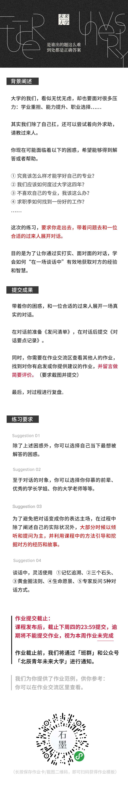
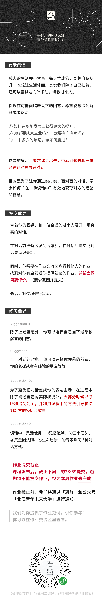

本周课程目录
主讲人：许复
台湾资深媒体人 、英国剑桥大学 商学院/科技政策硕士
「底层能力大课」
《访谈者本能》
如何通过对话获取对方的经验和智慧?
一、为什么聊经历很重要
二、经历的四种类型
三、对话方式一：记忆追溯
四、对话方式二：三个石头
五、对话方式三：黄金圈法则
六、对话方式四：生命愿景
七、对话方式五：专家反问
八、课程总结
课程导言
课程导言
遇见未来更好的自己，这里是未来大学，我是宋超。
我们邀请了许复老师，来自宝岛台湾的一位资深媒体人。
在这节课的还没开始制作的时候，许复老师和我探讨说：「底层能力」这件事大多数时候都是“日用而不知”的，就像我说的本能一样，所以我需要回去好好想想。
令我惊讶的是，下一次再见面的时候，许复老师并没有提及自己可以讲什么样的底层能力。他却拿出一个小本和一支笔，然后竟然开始深入地聊我的经历。聊到了下半场，整个对话几乎成了我的故事分享，许复老师只是坐在我的对面，一直听，然后不断问我几个问题。
一场对话结束后，许复老师对我说：如果你们需要一种本能层面的能力，我想刚刚那就是了。我做了很久的媒体，用访谈的形式与人展开对话，是我的本能。
他说，差的访谈就好像只是冷冰冰的盘问，但是厉害的访谈者，通过对话不仅可以了解到一个人的经历、思想和智慧，还可以通过对话引导对方反过来去梳理他自己的内心。而且整个过程像聊天一样，舒服而不刻意。
我恍然大悟，原来他给我实际演示了一遍「访谈者本能」。而令我惊喜的是，在许复老师刚刚不断的问题引导下，我也得以重新审视和思考我自己。
而对许复老师自己，他告诉我说：在刚刚有限的聊天里，我学习到了你这一路的创业经验，这对于我非常宝贵和受益。
这就是这堂课的来源了。许复老师为我们总结了4个展开对话的方式，和一个发问技巧，并给我们提供了基本的发问句式。希望你可以在听完课后，去到真实的对话中去练习这几招，真正掌握「访谈者本能」。
如果你已经报名了未来大学基石学院，那么就让我们马上开始本周的课程吧。
热身练习
假设你面临找实习、工作，或者换工作，急需要指导和意见。经朋友介绍，你很幸运的遇到一位在求职方面有丰富经验的前辈。
如果有机会，让你们面对面对话1小时，你都会问他些什么问题呢？
章节一 4种「经历类型」与4种「对话方式」
导师自白
你好，我是许复。我现在最主要的身份是大学老师，我也受邀在两岸三地的知名企业授课。在此之前，我有十多年的媒体相关经历，我既担任过新闻主播、记者，也做过书籍作者、大型论坛的主持人和发起人，还有互联网企业的市场公关高管。
因为在媒体相关行业中常常需要做访谈，这让我有幸遇到各行各业的成功人士。往往呢，我和他们的对话只有几个小时，甚至更短，但是在每次对话中，我都能听到他们生命中最重要的经历，而且还能够从他们的讲述中获得非常多宝贵的人生经验，这让我自身的成长受益良多。
为什么我喜欢聊经历
和他们对话，我会习惯性地从他们的经历开始聊。因为在我看来，一个人的智慧的产生，一定来自于他真实的，生活经历的点点滴滴，酸甜苦辣。
事实上呢，我们很难仅仅是通过想法或是概念层面的沟通，就获取到别人十几年，甚至几十年的智慧和经验。
我们一定是从：
他身上真实发生过什么事情？他遭遇过什么样的困难？他有过哪些成就？
他在挫折中有过哪些成长？他在成就中有过哪些体悟？具体做过些什么？
——从这些事情和事件中去真正了解他。当一个人所有经历加起来，凝结起来成一条绳，就是一个人的智慧。
而一个人的经历，也是最能和我们自己产生共鸣的地方。我曾和宋超有过很深刻的探讨，为什么，在我们未来大学的课程里，不直接上来就把老师的建议、感悟告诉大家，而是要让每个老师讲自己的生命故事。
就是因为，故事是可以打动人心的，在故事中，人们能看到和自己相似的境遇，比如年轻时代的迷茫和焦虑，比如面对困难时的挫败和低落，等等，这些是每代人都会经历的。而且在一个彼此共鸣的场域中，我们通常可以从故事中收获向前的力量，尤其是在我们手足无措、甚至孤立无助时，这些生命故事是可以给到我们启发和希望的。
这也就是我喜欢和别人聊经历的另一个原因。
另外，一段好的对话，不仅仅可以让你收获启发，还可以帮助对方梳理他的过去。这样的对话，可以通往深处，让发问者和对话者建立更深刻的关系。
我还记得在《看见》节目中，有一集，柴静对话周星驰，在聊天结束时，周星驰对柴静说了一句谢谢。
这句谢谢，不仅仅是因为他们在聊天中产生了共鸣，而且是因为，柴静问了很多好的问题，激发了周星驰对于自己的更深层次的思考，而这种对话对于回答者来说是非常宝贵的。
经历的四种类型
当然，我并不是随意和别人聊聊他过去的经历，我将一个人的经历分成几个类型：
第一种经历叫做“时间历程”，也就是这个人过往都经历过什么，这是在大的时间维度上广泛地去了解对方。
第二种经历呢，我叫它“记忆锚点”，也就是根植在一个人经历记忆里最重要的人、事、物。这是为了找到对方最核心的经历故事，而这些故事通常深刻的影响了他的现在和未来。
第三种类型，是一个“行为事件”，也就是一个人经历中某个具体发生的事情。一般来说，我们通过了解对方“具体做了什么，以及为什么这么做? ”，而从中去学习具体的、有实操性的经验和方法。
最后一种经历类型，算是“经历”的延伸，叫做“愿景”，因为一个人的过去深刻影响一个人未来的走向，而了解对方的未来，可以让我们获得很多不一样的启发和视角。当然，我们可以同时反向从未来切入去了解对方的过去，毕竟未来、现在和过去，都是紧紧相连的。
依次对应这四个不同的经历类型，为了让我们在有限时间里，了解一个人的过去经历，进而从中挖掘智慧和经验。我从我多年的访谈本能中总结了四种对话方式，或者说是提问方式，现在全部分享给你。
它们分别是：记忆追溯、三个石头、黄金圈法则，以及生命愿景。课程的最后，我还会提供给你一个对话技巧，叫做专家反问，它用来帮助我们更好地获取对方最直接的指导意见。
刚刚提到的这四种方式，加一个技巧，我们既可以综合使用，也可以单独使用。现在，就让我们开始吧。
#关注许复老师：
微博@许复Harry
今日头条@许复台湾
章节二 「记忆追溯」和「三个石头」
对话方式一 记忆追溯
首先，我们来聊聊「记忆追溯」。
通常，当我对一个人的过去经历非常好奇，但是主要的目的，不是聚焦在达成某个请教目的的时候，我就会用这种方法。一般，这个人会是我敬仰的一个前辈，或者一个有传奇色彩的人物，或者是一位我想深入认识的优秀朋友。
一般，在做简单的热场后，我会这么切入：你还记得你十年前，那个时候你在做什么吗？
我们可以根据对方的年纪和阅历去找切入的时间点，比如：
你还记得你大学的时候，那个时候你是什么状态吗？你都在做什么？
你还记得你刚加入工作的时候，那个时候你都在做什么吗？
对方通常会回顾一下，自己那个时候的情景。我大学的时候，条件可比现在艰苦多了，我呢什么什么什么……
这只是个引子，目的是让对方进入一种回顾过去的状态中来，当一个人开始讲自己，对方的状态会很快放松下来，进入对话状态。
然后，我会展开去问，去追溯对方的过去：
现在想想，从那个时候到现在，你都经历了哪些成长阶段？
对方多半会开始进入记忆检索的状态：
我呢，当时从大学毕业后，我就去了可口可乐……什么什么什么，干了三年后呢，我就去了哪里哪里……
过程中，我们可以对感兴趣的部分，进行追问：
当时都发生了些什么，或者说，那段时间，你都是怎么度过的？
如果对方的表达有所停顿，你就可以不断引导对方：
后来呢？或者，后来你去了哪里？也可以问，所以，后来怎么样了。
基本上，我们不断引导，顺着双方间的默契流动，柔和的追问，基本上，可以把他生命中重要的阶段走过一遍。
在最后，我通常在对话结尾时会进行整体的回顾，这一步是让对方总结过去经历，提炼他的感悟和智慧的重要问题，我会这样说:
现在的你，和过去那个时候都有了哪些不一样？
举个例子：
我曾经在一场展览里，和一位台湾艺术家，发生过这样的对话，我和他从他的童年聊起。他说，童年时候他因为身体瘦弱，经常遭受排挤和欺负，小时候总是处在自我封闭的状态。父母也常年不在身边，他会觉自己是被世界抛弃的，所有从小就对别人充满警惕和怨恨。
在一次美术课上，他通过接触颜料开始找到了自己宣泄内心的方法。这也就是为什么后来在他早中期的一些作品中，时常出现暗黑和扭曲画面的原因。
接着，他讲了很多关于他父母如何送他出国读书的事情，当时他一心觉得，出了国就可以逃离原来的世界了。他也提到，他出国后如何选择了艺术，沉醉在其中，甚至从街头涂鸦做起。当时，他就画了很多抨击时政和人心黑暗的东西。
等听完了他一路的经历和遭遇，我问他：
现在的你，和过去那个时候都有了哪些不一样呢？
他告诉我说：
他最大的变化，就是学会了接纳自己，选择原谅别人。
当我问及，是什么让他发生了这样的改变的时候。他告诉我说，他曾经在展览上遇到一位老妇人，老妇人对他说，孩子，看你的画，我不知道你过去遭遇了什么。但是人生就好像一枚硬币，你盯著背面，却忘了正面，你的硬币只能停在那里。你试著把它立起来，硬币才可以前行。
他说他听到后，不自觉地开始流泪。他当时触动极了，甚至，他内心的死结开始打开。再后来，他试图联系那位老妇人，可惜已经没有机会了。不过，这位艺术家，开始慢慢开始用画作记录生命美好的一面，以及人们日常幸福的时刻，这让他的内心开始不再对抗这个世界、不再对抗自己。
他说他开始喜欢看街上一起玩耍的孩子，在日光下，那是他童年羡慕的情景。这也就是为什么，他在我们对话的当下，举办的那一场展览，主题就是展现小孩子的，童真的美好。
记忆追溯的对方，总让我有意想不到的收获。我常常在一段对话里，能看到对方过去的人生，以及内心一路的起起伏伏，就好像翻开一本故事书，读完它，让人记忆深刻，又无法忘怀。而故事，也能让我本能地反观自己，什么该释怀，什么也该让它过去。
好了，我小结一下吧。
「记忆追溯」是一种最基本的对话方式，通常
1、先切入对方的回忆：你还记得你多少年前，那个时候你在做什么吗？
2、然后开始追溯对方的记忆：现在想想，从那个时候到现在，你都经历了哪些成长阶段？
3、过程中用“后来怎么样了”进行引导，还可以用“当时发生了什么”进行追问。
这裡面，人们会经历过很多不同的人生阶段，有喜悦的阶段，骄傲的阶段，沮丧的阶段，挫折的阶段，反省的阶段，还有，收获的阶段。
4、最后，用现在和过去的对比，进行结尾：现在的你，和过去都有了哪些不一样？
这就是访谈者本能的第一种对话方式——「记忆追溯」。
对话方式二 三个石头
接下来这个方法，叫做「三个石头」，这个方法，可以单独使用，也可以深深结合前面讲的「记忆追溯」法合并使用。通过三个石头，你可以快速切到并了解到对方最核心的故事经历。
所谓「三个石头」，就是去了解对方某段经历中最重要的三件事情。
这里的石头，指的就是一个人的记忆锚点，是一个人经历中最重要的部分，而这些根植在人记忆中的重要经历，会深深影响一个人的现在和未来。
比如一个人小时候的家庭变故会影响一个人长大后的亲密关系处理；而在生命中我们遇到的一个重要人，可能往往一句话就可以影响我们的后来的生活。
通常，我会从「人」、「事」、「物」三个不同的角度去挖掘对方的记忆锚点。
从「人」出发，可以这样问:
学长，你觉得研究生期间，对你影响最大的三个人是谁？
或者你可以说：
前辈，在你创业期间，对你来说最重要的三个人是谁？
这个时候，通常对方会认真想一下这件事，如果对方是相对不善言辞的人，那么，我们就需要去引导他，比如对方回答说：
我想想，我那个时候创业，对我最重要的人，应该是我的一个哥们、我的合伙人，对对对，还有我当时的老板。
这个时候，我们可以就着他提到的其中一人进一步引导：
我好奇会是什么样的哥们，他对你影响这么大的原因是什么？
如果对方是一位健谈者，那就更轻松啦，顺着他的节奏继续提问，就可以顺带讲出很多故事了。
比如我曾经做节目，和一位企业家访谈。我问他，您是放弃了大公司的高管职位，自己跳出来创业的。你还记得当初你做出这个决定，对你影响最大的人是谁吗？
结果，他很有感触：
哎呀，提起这个，我那个时候很感恩我的前老板，我当时从公司离开，其实是他鼓励的。他说，你很优秀，自私一点来说，我希望你一直留在我身边，我也可以预期的到，你离开之后，要找到跟你一样优秀的人，一定需要花一段时间，但是，我知道你更适合创业，现在互联网风头上，你必须尽快出去，我作为你的前老闆，师长，挚友，我会用尽我的资源帮你。
创业，真的非常辛苦。我的创业初期，其实有一段时间，没有和他联繫，有一段时间，我的公司被竞争对手打价格战，压的喘不过气来。有一天晚上，我去请教他，他当时帮我分析接下来的策略，几乎到天亮，接下来几天，还帮我牵线了好几个客户。
好，我跟这个企业家的访谈持续着，我接着问他，你老板这么愿意帮你的原因，你觉得是什么？
他就接着说了：
对，这个我一定要好好分享。我问我老板，你当时为什么愿意那样帮我。我老板说：说心里话，你是我带过最有潜力的人了，说真的，鼓励你创业，我很挣扎，因为我也需要你在身边帮我打理企业。可是，我看到你每次开会时在台上报告的样子，那种坚决的眼神，太让我想起年轻时候的自己了。我四十岁才开始创业，我觉得有点晚，你现在才三十，我希望你到四十岁的时候，比我现在更好！所以，我要放你出去，还要用不同的方式继续支持你。我帮你，也就当是帮过去的自己吧。
后来，这位老板，甚至帮助这位企业家完成了可观的融资。
有了这样的互相打开的对话氛围和状态，在下节目后，我们在电视台的贵宾室喝咖啡，我就接着问他，那一个相谈到天亮的时刻，他得到的建议是什么？他跟我说了很多，包括他的老板给到他哪些方面的商业策略等等，在这里，我也就先不展开了，但重点是，我作为一个发问者，我的收获是持续性的。从节目上，到节目下，我既听到一段段故事，也学到了各种商业策略方面的知识。
那次的对话，让我受益良多。这也就是为什么我常喜欢从故事切入对话，是因为故事让方法和建议变得鲜活，而我后来发现，这些故事也会慢慢渗透到的我经历里和思考里。
刚刚只是「人」的维度，通过从对方某个阶段重要的人切入，了解背后的经历。
我们也可以直接从「事」本身切入：
你在那个公司做了五年，这期间对你影响最大的三件事是什么呢？
你辞职之后，创业初期，你还记的那段时间，对你来说最重要的三件事吗？
不过，事情本身的范畴会有点大，我通常从这么两个角度去发起「三个石头」：
第一个是失败、挫折的石头，比如说，Jeffery，您现在已经是被大家熟知的建筑师了，你在刚进入这个行业的时候，你遇到的最困难的三件事情是什么呢?如果对方讲得并不详细，我们可以接著问，您当时都是如何度过这些困难的呢？如果你刚好是建筑行业的新手，那你就可以听到对方初期都踩过哪些坑，这会是极宝贵的经验。
第二个问法，是问成就的石头，比如，陈教授，您已经到了桃李满天下的年纪，回顾过去，您觉得自己最大的三个成就是什么呢？
如果你希望再能挖掘到一些干货，你可以接着问：陈教授，你说您其中最有成就的事情，就是参与并设计了台湾小学教育的新标准，您能分享下做成这件事的三个心得吗？
这样，你就既聊到了故事，也谈到了干货的经验。
说完了「人」，也谈了从「事」切入。「三个石头」还有一个角度，就是「物」。
比如，你可以从一个人的生活的地方去发问：
对你来说，过去的人生阶段，对你来说最重要的三个地方是哪里吗？
往往一个人和一个地方，会有着深刻的联系，你童年长大的地方、你打拼过的城市、或者是你成家的地方，这些关键的地方，将你的人生的经历串在一起，也将你的记忆保存在那里。
再比如，你可以从书入手，比如：
Jack，对你来说最重要的三本书是什么？
不过，从「物」的角度去问，需要你很多的引导和追问。待会，我会提供另一种对话方式，告诉你如何针对一个点或者某个具体的经历事件，进行深挖。
小结一下，刚刚我们聊了「三个石头」的对话方式，也就是去挖掘对方经历中最重要的三个人、事、物，然后引导出背后的经历和故事。发问的句式是：
对你影响最大的三个……是什么？
对你来说，最重要的三个……是什么？
可能是三颗最珍贵的泪水，三个做重要的奖杯，三个最难入眠的夜晚，当然，还有可能是三个最难忘的笑容。
章节三 「黄金圈法则」和「生命愿景」
对话方式三 黄金圈法则（WhatHow-Why）
我们要聊的第三个对话方式呢，叫做「黄金圈法则」，也就是大家所熟知的What-How-Why。这个方法主要用于，当你想深入了解对方经历中的某个具体的事情时。
What 是去明确对方做了什么？
How 是挖掘对方都是怎么做到的？每一步都是怎么操作的？
Why 是询问对方这么做的动机或者原因？
现在我们来看看这么用？
比如罗凡是一个准备毕业找工作的大四学生，但是对于本专业的就业方向有点不清晰，而且对于如何秋招、春招有点蒙。但他知道一位直系师兄，是往届就业最好的，所以他想请这个师兄吃顿饭，然后请教一下师兄找工作的事情。
多半罗凡会这样问：师兄，我现在秋招，你是我们系就业最好的师兄，想请教你，你有什么建议给我吗？
通常，师兄给罗凡列出一系列可以准备的事情，罗凡觉得很有收获，就回去照着做了。
这是我们通常会经历的普遍场景。
当然，这样的请教没有关系，但是，极有可能，罗凡获得建议都是方向性的，这会让罗凡面临一个风险。
这种风险我把它叫做「细节缺失」。
所谓细节缺失，就是当人在去给其他人提供建议和方法时，都是从自身的经历中提炼和概括出来的，但是，接收讯息的那个人，未必理解这当中所有的逻辑，还有前因后果之间的关係，因此，他会陷入表面，或是片面，甚至错误的解读，以致于他找不到具体的点，让他去学习。
就好像有人给你指路，说：你这么走吧。但是也没告诉你这条路会走到那个地方，走着走着，你就会开始慌。
罗凡其实可以这样问他的师兄：
师兄你当时秋招的时候都做了些什么？做了什么准备？
师兄会说：
第一件事情，我先是去搜索和整理了我所有感兴趣公司的岗位JD；然后呢，我记得当时好像找了一些学长学姐，帮我改了一下简历；
我再想想，我最后呢，我拉了班上几个我关系不错的同学，然后我们组成了小组，每天晚上呢，就分享自己看到的面试题目，或者就拿上午刚面试完的题目，相互提问，互相练习。
刚刚这一步，主要还是在What的范围，What是为了收集信息，但是我们不能只停在这一步，通常我们去问别人建议，大多也都停留在What层面。
接著，罗凡可以先从How入手去问：
师兄呀，你当时整理JD，都是怎么做的呀？
师兄就说了：
我呀当时，把所有的JD都汇总在了一张Excel表上，我竖栏分成了公司岗位，横栏分了岗位描述、招募要求、投递邮箱和时间。
罗凡可以接著问：
师兄，这样会不会花费很多时间？你为什么要这么做呢？
师兄回答说：
我那个时候呀，觉得每次登陆、查看，感觉效率就很慢，我就想有没有可能把信息都收集在一起。这样避免了二次查看，也方便我之后做Offer之间的选择。对了，我当时还加了一栏，在招募要求后面，我会针对性地把我的经历按照要求写下来，到时候针对性地复制到简历上，然后再投出去。
你看，问Why其实是为了进一步知道对方做某个事情的动机，如果罗凡忘了追问一个why，就失去了另一个重要的讯息，那就是师兄这么做其实还有一个原因，就是为了在做选择时进行offer之间的对比。
然后呢，罗凡就可以继续问How了：
师兄，所以你当时是怎么做选择的呢？
师兄就会告诉罗凡更细节的做法：
我会把面试过了的标成黄色，然后最后在加三个栏目，一个是待遇福利，一个是这个岗位未来的发展，最后一个是我自己是否真的想做，然后我会做一些权重的评分等等。
你看，罗凡用了What问基本的事件信息，然后用Why和How交替使用，去挖掘动机和具体的操作步骤。基本上，罗凡把师兄当时是怎么做的就完全给挖透了。这样就不至于出现细节缺失了。
至于师兄找人改简历和找同学组成秋招小组，罗凡都可以这样问了。现在你发现了吗，罗凡算是把请师兄一顿饭的价值放到了最大。
再举个例子，如果我们想去请教别人是如何创业的，就可以用黄金圈法则：What-How-Why。我们可以分阶段问：
创业初期对方做了什么，然后问为什么要做这些，知道了对方的更深层次的考量和思考后，我们就可以继续问对方具体是怎么做的？这就是可以实操去使用的经验和方法了。
如何在初入职场的时候快速提升自己，如何搞定一个客户，如何申请学校等等，我们都可以这样去问。
所以，我总结一下，黄金圈法则What-How-Why，就是聚焦于对方的某个具体发生的经历事件，然后从做了什么，为什么这么做，以及怎么做的三个层面去问。
对话方式四 生命愿景
接下来我们要谈的对话方式是「生命愿景」，所谓生命愿景，简单说，就是去询问对方对于未来的想法和规划，这也牵涉到了，他自己个人的核心价值，还有他能为这个社会做出的贡献。在生命愿景的对话中，我们可以了解到一个人对于自己内心的追寻，我们还可以看到一个人对于未来机遇的判断和把握，重点是过去跟未来的串连。
怎么说呢？
我通常会这样切入发问：
你有想过，未来3年你有什么打算吗？
通常呀，这个时候对方还是会下意识的在脑海中去检索一下。因为，可以回答的范围还是有点大，不见得每个人都有办法快速给出回应。
这很取决于我们与对方聊天的语境。如果你在向对方请教关于孩子的培养经验，那么对方多半会谈到孩子；如果你们之前聊的是对方的职业经历，对方会自然向着职业打算去聊。
所以通常，在对话时，试着在句末加上限定，这样就可以协助对方思考，也引导对话发展到你想了解的部分。
我举个例子：
Rachel，你有想过未来3年你有什么打算吗？比方说，你是打算继续从事一线的教育工作吗？
除了职业，你可以从家庭背景去问：
陆姐，你有想过未来1年内的打算吗？你怎么打算你的孩子以后的发展呢？
你也可以从对方的个人目标去问：
Peter，未来几年有什么打算吗？准备出国发展吗？
你还可以从更高意义上去问对方：
吴先生，你是这次电影的重要投资方，而中国科幻电影事业刚起步，未来几年，你有什么进一步的想法，来推动这个产业呢？
你看，一个大的问题再加上一个限定，“未来”这种大的问题可以将对方引向更深的思考层次，而后面的限定又不至于将对方置身在一个比较难回答的问题上，而且还能问出你想听到的部分。
我曾经做一档经济节目，有幸遇到一位知名的房地产研究专家，欧阳先生。我那天是这样问他的，欧阳先生，你刚刚节目里提到未来政策对于中国房价的影响，未来3年你自己有什么买房的打算吗？
他呢，想了一下，和我聊了几个非常具体的值得投资的地方，处于新发展区，但是，未来国家发展倾向利好。他呢，就打算从5年入手，阶段性进行投资。
你看，本来，我在节目上，只能听到他对于政策和房地产走向宏观分析，但是从「生命愿景」去发问，将一个大的话题拉到对方自己身上，通常我们可以听到很多实用性的信息。
包括，我刚刚的那几个问题。
问是否可以从事一线教育工作，我们可以了解到她对于基层教育的看法和见解；
问是否出国发展，我们可以掌握她对于国内外行业发展形势的走向判断；
问是孩子的打算，我们可以学习到她对于孩子教育的理念；
问科幻事业的打算，我们可以了解到这个行业未来的走向和当前的发展瓶颈。
除了问未来的打算，还有一种更贴近「愿景」的问法是我很喜欢的：
你希望自己未来5年后，可以成为什么样子呢？
这个问题，通常可以挖掘的对方对于自身的理解，以及对方对于过去的回顾。
我还记得，我曾经在一个企业培训里，学员中，有一位小有气的咨询顾问，他在咨询行业已经20年之久。我就问他：
你已经在咨询行业二十多年了，刘先生，你有想过自己未来5年后，可以成为什么样子呢？
他一开始先是笑了，然后接著说：
我前几天还在想，忙了这么久了，是不是可以就停下来了。但是呢，我是那种不能安定下来的，多少年的出差，见不同的人，了解不同行业，能让我自己感到保存鲜活的。不过，年纪大了，想以后自己做独立顾问，选一些自己喜欢的行业去探索一下。
我很好奇，从他资深的角度来看，他会看好哪些行业？我就问：
刘先生可以具体说说，你想探索那个行业呢？
他就和我说，他看好半导体、智能工业机械等等，这也是本科读材料自动化的时候感兴趣的方向，自己很看好。后来，他呢就给我很认真地分析了这些行业的发展趋势。差不多和他聊了有半小时，我开始好奇他过去的经历，我就问他：
刘先生，你在一开始提到自己不是那种可以安逸下的人，你做了这么多年咨询，有哪三件事情，对现在的你有很大的影响呢？
你看，我从「生命愿景」，又切到了「三个石头」去问他。他就开始和我聊，他早年咨询，遇到的一些特别的案子和遭遇。后来，临走时，他加了我的微信，还说，许复，和你聊天真的很开心，我有机会请你到我家楼下的咖啡馆，我们要好好畅聊。
其实，我常常利用「生命愿景」的对话，用来拉近和加深我和对方的关系。因为这种问题，通常只发生在朋友之间。而我将它用在与他人的日常对话中，这会极大得帮助两个人的对话变得有温度。
另外，生命愿景的发问，可以让我用自己的想法和对方的观点进行对照，因为我常常在生命愿景的聊天中，意识到自己之前从来没有想过的角度，这也让我，在面对自己的生命课题时，可以豁然开朗，茅塞顿开，找到解决方式。也算是一种学习的方式了。
小结一下，生命愿景的对方方式，简单说，就是问：你有想过你未来几年的打算吗？
通常，你可以加上职业、家庭、环境等等方面的限定语，去挖掘你想了解的部分。
或者，你也可以问：你希望自己几年后，可以成为什么样子吗？
通过对方在愿景中描述的信息，你既可以通过去回溯对方的过去经历，也可以进一步询问对方对于未来趋势的一些判断和思考。
章节四 「专家反问」与课程总结
对话技巧 专家反问
最后呢，我再给你提供一个小技巧，也就是「专家反问」。
「专家反问」通常用在你想向对方寻求建议的时候，我们将对方作为一个要请教的专家，然后反问对方问题。
具体来讲，一般情况下，我们会习惯性地直接去问对方建议：
事实上，这种时候，对方是站在一个第三视角，进行客观的分析和回答，这个回答会是比较抽象和概括性的，你得到的资讯，可能很重要，但是还不够具体。
因此，我们需要调动对方过去实际的经验和这个问题的连接，我们可以这样问问题：
许复老师，我正在准备一个关于青年教育主题的演讲，如果换做是你，你会怎么准备这场演讲呢？
你看，这个问题，就是把让对方置身在自己的真实场景中，这会调动起对方关于演讲这件事下意识的一些反应。
对方会说：我会这么做这件事请，首先从内容上，然后从观众情绪调动上……等等。
对方甚至会反过来，问你更多细节：所以你的主题具体是关于什么？对谁演讲等等，然后给你更多具体的建议。
这时，你可以看到对方在处理这样一个问题时，最真实的反应。你也可以获得很多直接和你要做的事情紧密相关的，而且是细节性的，可操作，非常具体的方法。就好像，你看着一个专家自己做了一遍这件事，而你在一边观察和学习，这远比你直接听对方抽象和概括性的见解要来的直接。
我再多举几个例子：
比如，你想问如何考研的经验，你可以问：
师兄你好，我现在想考本校的研究生，如果换做是你，你会怎么准备呢？
再比如，你想问如何换工作的事情，你可以问：
秦总，我现在是做产品运营，最近有一个很好工作机会，我想要跳到品牌市场相关的工作，如果换做是你，你会怎么准备这件事呢？
再或者，你像创业，你可以问：
超哥，你也是创业的过来人了，我一直打算创业，想做青年人的海外游学项目。如果换做是你，你会怎么启动这件事呢？
简单说，就是你自己准备的越充分，你得到的回应，就会更丰满。
总结
本周课程的结尾，我们来回顾一下，如果我们想要在限定的时间里，了解一个人智慧和经验，并且希望得到的信息是可以实际帮助到我们的，最好的方式就是深入了解对方过去的真实经历和故事。
而我将经历分成了四种类型：
第一种类型是「时间历程」，也就是从大的时间维度下去看一个人的成长阶段。
通常，我们使用「记忆追溯」对话的方式。就从过去的一个时间节点，开始追溯那个时候到现在的经历。我们分别从切入-追溯-回顾，三步进行。
也就是：
你还记得你多少年前，那个时候你在做什么吗？
现在想想，从那个时候到现在，你都经历了哪些成长阶段？
现在的你，和过去都有了哪些不一样？
在追溯过程中，你可以用“后来怎么样了”进行引导，你还可以用“当时发生了什么”进行追问。
接着，经历还有第二种类型：「记忆锚点」，也就是深深印在一个人记忆中的经历。那是构成一个人的核心经历和故事。比如你所在未来大学听到的生命故事，对于导师来说，都是他们生命里的重要经历。
对于记忆锚点，我们用「三个石头」去发问。可以帮助我们快速挖掘出对方的重要经历。
问法通常是这样的：
那个时候，对你影响最大的三件事是什么呢？
那个时候，对你来说非常重要的三件事吗？
这里的“事情”，也可以替换成“人”或者“物”。
第三种经历，叫做「行为事件」，也就是一个人经历中某个具体发生的事情。通过深究这个事件，我们可以获得很多实操层面的经验。这里使用的对方对话方式叫做“黄金圈法则”，也就是What-How-Why。
你当时做了什么？
你当时怎么做的？
你当时为什么那么做？
切记，只停留在What层面，你获得的建议很可能有“细节缺失”的风险。
最后一种经历，是过去向未来的延伸，叫做「愿景」。一方面我们了解到一个人内心一直在追寻探索的东西，另一方面，我们可以了解到一个人对于未来机遇的判断和把握。我们可以用「生命愿景」对话方式展开：
你有想过你未来几年的打算吗？
你希望自己几年后，可以成为什么样子吗？
聊完了对于四种不同经历的对话方式，我又为你提供了一个小技巧，也就是专家反问。
也就是把对方当专家，然后把自己真实情景抛给对方，让对方置身你提供的场景中给出具体的建议。我们可以这样问：
我现在在做某事，如果换做是你，你会怎么做这件事呢？
好了，以上就是我本周的「底层能力」课程了。
如果你觉得有收获，可以将本节课分享给你的朋友，和其他有需要的人。
我是许复，再见。
课后作业
学生作业

职场作业
成人的生活并不容易：每天忙成狗，既想自我提升，也想让生活体面。其实我们除了自己扛着，还可以尝试着向外求助，请教过来人。
你现在可能面临着以下的困惑，希望能够得到解答或者帮助。
①如何在职场发展上获得更大的提升？
②30 岁要成家立业吗？一定要有车有房吗
③二十多岁的年纪，该如何度过
这次的练习，要求你走出去，带着问题去和一位合适的对象展开对话。
目的是为了让你通过实打实、面对面的对话，会如何“在一场谈话中”有效地获取对方的经验和智慧
提交成果
带着你的困惑，和一位合适的过来人展开一场真实的对话
在对话前准备《发问清单》，在对话后提交《对话要点记录》
同时，你需要在作业交流区查看其他人的作业，找到对你有启发或你提供建议的作业，并留言做简要评价。（要求截图井提交）
最后，对过程进行复盘。
练习要求
Suggestion 01
除了上述困惑外，你可以选择自己当下最想被解答的困惑。
Suggestion 02
至于对话的对象，你可以选择你仰慕的前辈你的老板或者有经验的朋友等等
Suggestion 03
为了避免把对话变成你的表达主场，在过程中除了阐述自己的实际状况外，大部分时候以倾听和提问为主，并利用课程中的方法引导和挖掘对方的经历和故事
Suggestion 04
谈话中，灵活使用
①记忆追湖
②三个石头
③黄金圏法则
④生命愿景
⑤专家反问
5 种对话方式
作业提交截止：
课程发布后，截止下周四的 23:59 提交，逾期将不能提交作业，视为本周作业未完成
作业截止前，我们将通过「班群」和公众号「北辰青年未来大学」进行通知
我们为你提供了作业范例，供你参考
你可以在作业交流区里查看。

作业区观察
《教研组作业范例》——往期学员:薛零零
✔想被解答的困惑：
如何准备保研？如何获得足够多的保研加分项？
✔选择的过来人：
往届成功保研到上财的学姐",
"（1）记忆追溯：
学姐，您已经现在跳出了保研的坑，准备进入上财的新环境了，您还记得去年的现在也就是大三的下学期自己在做些什么、是什么样的状态吗？
（2）三个石头：
学姐，可以说说保研期间让您印象最深刻的三件事吗？
（3）黄金圈法则：
WHAT：学姐，您的课外活动加分项将近满分，那您都通过参加哪些活动来获得如此高的加分项呢？
HOW：那学姐你是如何准备当时的大学生创新创业训练计划和互联网+的比赛呢？感觉这两个比赛难度都很高诶 。
WHY：既然这个比赛对我们专业来说并不占优势，还要耗费大量时间，那学姐您是因为什么选择参加这个比赛呢？为什么不试一下其他的相对更符合我们专业特点的比赛呢？
（4）生命愿景：
学姐，目前距离研究生入学还有很长时间，学姐在这段时间有什么好的打算吗？是想要出去旅游还是学习一些新的知识呢？
（5）专家反问：
学姐，我的成绩排名专业第二，但是几乎没有什么课外活动的加分项，成绩拉不开和其他同学的差距，而这这最后一学期加分项也提不上去多少，所以我现在处于迷茫纠结焦虑之中，既没有保研人一鼓作气的热情，也没有考研人日复一日的坚定。如果学姐面临这样的情况下，学姐会怎样选择呢？",
"（1）记忆追溯：
——学姐，您已经现在跳出了保研的坑，准备进入上财的新环境了，您还记得去年的现在也就是大三的下学期自己在做些什么、是什么样的状态吗？
学姐：大三下学期的时候还是挺忙的，一方面要忙于各种比赛，争取到足够多的加分项，一方面要时刻留意各大院校的夏令营和推免通知，要准备各种各样的材料和文件，一遍遍耐心的审核自己的材料，同时专业课和英语也要复习，因为夏令营会有相应的考核。那时候几乎每天都是十二点之后起床，早上六点就起床。不过现在好啦，功夫不负有心人，你也加油哇！
（2）三个石头：
——学姐您觉得在您保研期间对您帮助最大的三个人是谁呢？
学姐：导员，室友和一个夏令营认识的朋友。 导员，导员在保研的整个过程中给我们提供了很多帮助，他是一个很好的老师。而且保研的时候其他内心有太多不确定，所以就比较不能安心。
室友，当时每天跟室友一起去自习室，看着她每天投入和以前的疯玩疯闹完全不一样的状态，就让我意识到自己也必须要更加努力才行。
夏令营的朋友，至于那个在夏令营认识的朋友，其实刚开始我参加的很多夏令营都是没有拿到offer的，所以7.8月份就处于一种比较低沉的状态，然后她就一直鼓励我九推的时候再申请，后来果然，我成功保研还是跟她同一个学校。
（3）黄金圈法则：
WHAT——学姐，您刚刚有说到您在大三下学期的时候也在准备很多比赛，那学姐您在大三下学期的时候都参加了哪些比赛来提高自己的加分项啊？
学姐：——比赛参加了很多，什么互联网+，大创，大学生英语竞赛，还有我们学校举办的很多比赛，比如大学生英语配音大赛，英语写作大赛，校运动会，“一带一路”专项挑战赛等等这些。这些比赛的信息你可以在到梦空间上找，我们学校的各种比赛信息都会在上面发布，也可以关注我们院的微信公众号，各种活动在上面也都会有通知的
HOW：——好的，谢谢学姐。那学姐你是如何准备当时的大学生创新创业训练计划和互联网+的比赛呢？感觉这两个比赛难度都很高诶。
学姐：——首先，组队是很重要的，以大学生创新创业训练计划为例，我当时组队是找的不同专业的同学，这样可以更好地发挥各自的优势，其次就是分工，因为整个项目是我主负责，所以我首先召集大家说一下对比赛的一些想法，然后对我们想出的选题进行汇总，然后我就去找了老师，让老师帮忙选出一个合适的选题并问了一些具体的实行方案，接下来就是分工，我们先讨论出整个作品的大致思想主线，然后把整个项分成几个不同的部分由对应的人来负责，每个人都做好各自的part，合起来的作品才好看完整。最后再去找导师审核修改，整个过程呢，前期很重要，后期大概就是一遍遍地对作品进行修改了。
WHY：——这个比赛对我们专业来说并不占优势，学姐你们当时准备一定也耗费大量时间，那学姐您是因为什么选择参加这个比赛呢？这样不会耽误其他的相对更符合我们专业特点的比赛吗？
学姐： 其实还好啦，准备确实用了挺多时间的，不过知易行难，安排好自己，知道自己在什么时间该做什么事就不会因为这一个比赛而耽误很多时间的。而且我当时执意参加这个比赛呢，其他是有我个人的兴趣在里面的，心之所向嘛。
（4）生命愿景：
——那学姐，目前距离研究生入学还有很长时间，学姐在这段时间有什么好的打算吗？是想要出去旅游还是学习一些新的知识呢？
学姐：已经规划好了一个全国游的路线，过几天天气好一点就可以出发了。
——哇，实名制羡慕，不过我目前还处于坑里面挣扎的状态，我也要努力才行。
（5）专家反问：
——学姐，我的成绩排名专业第二，但是几乎没有什么课外活动的加分项，成绩拉不开和其他同学的差距，而这这最后一学期加分项也提不上去多少，所以我现在处于迷茫纠结焦虑之中，既没有保研人一鼓作气的热情，也没有考研人日复一日的坚定。如果学姐面临这样的情况下，学姐会怎样选择呢？
学姐： 如果是我的话，我应该会先冲刺一下保研。不过每个人的情况不一样，主要还是根据自己的情况，建议是如果没有什么特别想要去的学校的话就保研，考研的风险其实是比较大的。",
"#教研组提示：大家需要在作业区选择让你有启发的「对话记录」，评论并截图#",
"（1）首先，学会了一个问问题的逻辑性，像以前那样随机地发问可能根本问不到自己想要的，也容易尴尬地断片。
（2）其次，懂得去听的重要 问你都喜欢表达自己，却少有人愿意真正地去倾听其他人的心声，但其他好的询问和倾听是可以让彼此都愉悦的。
（3） 最后，学到很实用的技能，它大概会让我更勇敢地去表达自己想要表达的东西，不会再不知所以地向前辈讨要经验。